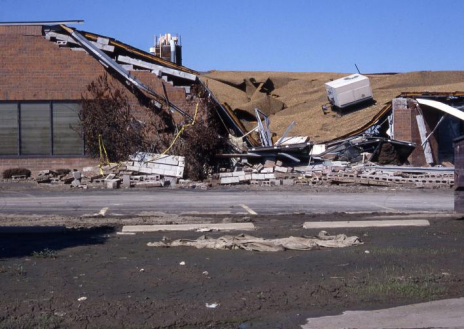

Global warming
is coming for your house
Who will foot the bill?
Global warming poses a significant threat to residential properties worldwide, with unexpected
regions facing risks. The debate centers on who should bear the financial burden of adaptation and
mitigation efforts, highlighting the urgency of addressing these challenges promptly.
Governments need to take action.
THINK ABOUT the places vulnerable to climate change, and you might picture rice paddies in
Bangladesh or low-lying islands in the Pacific. But another, more surprising answer ought to be
your own house.About a tenth of the world's residential property by value is under threat from
global warming—including many houses that are nowhere near the coast.
提起那些易受气候变化影响的地方，脑海中或许会浮现孟加拉国的水稻田，亦或是太平洋中海拔较低的岛屿。但更为令人惊奇的是另一个画面，也就是你自己的房子。
按价值评估，世界上约有十分之一的房产面临全球变暖的威胁——包括许多内陆房屋。
foot the bill
负担费用
e.g.
Once again it will be the taxpayer who has to foot the bill.
这一次掏腰包的又得是纳税人。
From tornadoes battering midwestern American suburbs to tennis-ball-size
hailstones smashing the roofs of Italian villas, the severe weather bring about by
greenhouse-gas emissions is shaking the foundations of the world's most important asset class.
从肆虐美国中西部郊区的龙卷风到砸向意大利别墅屋顶的网球般大小的冰雹，温室气体排放造成的严峻天气正在打击世界上最重要的资产种类。
bring about
引起，导致
e.g.
To that extent they helped bring about their own destruction
他们正是如此推波助澜，导致了自己的毁灭。

The potential costs stem from policies designed to reduce the
emissions of houses as well as
from climate-related damage. They are enormous. By one estimate, climate change and the fight
against it could wipe out 9% of the value of the world's housing by 2050—which amounts to
$25trn, not much less than America's annual GDP.
潜在的成本源自旨在减少房屋碳排放和气候相关损坏的政策。这类损害非常庞大。一份估算显示，到2050年，气候变化以及相关应对措施会消除世界住房价值的9%——相当于25万亿美元，仅比美国一年的GDP少一点。
stem from
源于
e.g.
Most of his problems stem from a lack of confidence.
他的多数问题源于自信心不足。
It is a huge bill hanging over people's lives and the global financial system. And it
looks destined to trigger an almighty fight over who should pay up.
这是居民生活以及全球财政体系面临的巨额账单。另外，这看起来势必会引起“谁来买单”的激烈争执。
almighty
全能的；极大的；十分严重的
e.g.
The next moment there was an almighty crash.
接着发生了剧烈的撞击。
Homeowners are one candidate. But if you look at property markets today, they do not seem to
be bearing the costs.House prices show little sign of adjusting to
climate risk.
房屋所有人是候选买单者之一。但如果把目光投向当今的房产市场，房屋所有人似乎并未为此买单。房价几乎没有任何适应气候风险的迹象。
bear the costs
承担费用
e.g.
The supplier shall bear the costs for technical services.
技术服务的费用由供货商承担。
In Miami, the subject of much worrying about rising sea levels, they have increased by
four-fifths this decade, much more than the American average. Moreover, because
the impact of
climate change is still uncertain, many owners may not have known how much of a risk they were
taking when they bought their homes.
在迈阿密，尤为担心海平面上升的群体在近十年增长了五分之四，远高于美国平均水平。此外，由于气候变化的影响还不明确，许多房主在买房时或许还不太清楚所面临的风险。
the impact of
......的影响
e.g.
The impact of the blow knocked Jack off balance.
这一记猛击把杰克打了个趔趄。
Yet if taxpayers cough up instead, they will bail out well-heeled
owners
and blunt helpful incentives to adapt to the looming threat. Apportioning the costs will be hard
for governments, not least because they know voters care so much about the value of their homes.
The bill has three parts: paying for repairs, investing in protection and modifying houses to
limit climate change.
然而，若由纳税人来买单，那么他们能资助富有的房主，且用来适应潜在威胁的有力激励措施会遭到削弱。对政府来说则难以分摊成本，尤其是因为政府明白选民尤为在意房产价值。相关资金由三部分组成：维修费、保护性投资以及限制气候变化的房屋改变投资。
bail out
保释（某人）；（往外）舀水；（从飞机上）跳伞逃生；（常指通过出资）帮助…脱离困境
e.g.
He desperately needed cash to bail out the ailing restaurant.
他急需现金使经营惨淡的餐馆走出困境。
Insurers usually bear the costs of repairs after a storm destroys a roof or a
fire guts a property. As the climate worsens and natural disasters become more frequent, home
insurance is therefore getting more expensive. In places, it could become so
dear as to cause
house prices to fall; some experts warn of a “climate-insurance bubble” affecting a third of
American homes.
在风暴摧毁屋顶或者火焰吞噬房屋后，往往是由保险公司来承担维修的费用。随着气候变化加剧，自然灾害愈发频繁，家庭房屋保险因而会更加昂贵。在一些地区，房屋保险价格高昂，甚至造成了房价下跌。一些专家警告称这会引发“气候变化保险泡沫”，影响美国三分之一的房屋。
so dear as to
如此珍贵以至于
e.g.
And so deservedly dear as he is to his sister, whatever anxiety she may feel on his behalf is
natural and amiable.
既然他确实值得他妹妹珍惜，那么，不管她替他担的是什么忧，那也是合情合理，亲切可喜。
Governments must either tolerate the losses that imposes on homeowners
or underwrite the risks
themselves, as already happens in parts of wildfire-prone California and hurricane-prone
Florida.
政府要么默许强加在屋主身上的损失，要么自己来承担风险成本，这在易受野火侵袭的加州部分地区和易受飓风袭击的佛罗里达部分地区已经成为了现实。
impose on
强迫；欺骗
e.g.
People sense your strength and do not impose on you.
人们感受到你的力量，就不会去强迫你。
The combined exposure of state-backed “insurers of last resort” in these two states
has exploded from $160bn in 2017 to $633bn. Local politicians want to pass on the risk to
the federal government, which in effect runs flood insurance today.
两州由州政府支持的“最后求助的保险人”保险赔偿金总额从2017年的1600亿美元增长到6330亿美元。当地政客希望将风险转嫁至联邦政府，因为联邦政府如今在实际运营水灾保险。
in effect
其实;实际上
e.g.
That deal would create, in effect, the world's biggest
airline.
事实上，这一协议将促成世界最大航空公司的成立。
Physical damage might be forestalled by investing in protection in
properties themselves or in
infrastructure. Keeping houses habitable may call for air conditioning. Few Indian homes have
it, even though the country is suffering worsening heatwaves.
向房产自身和基础设施投资建设保护性设施或许会避免物理损失。但若要让房屋宜居，则需要有空调。印度的房屋很少有空调，即使该国正遭遇不断加剧的热浪袭击。
forestall
预先阻止；先发制人
e.g.
Try to anticipate what your child will do and forestall problems.
尽量预见你的孩子会干什么，并预先阻止问题发生。
In the Netherlands a system of dykes, ditches and pumps keeps the country dry; Tokyo
has barriers to hold back floodwaters. Funding
this investment is the second challenge. Should homeowners who had no idea they were at risk
have to pay for, say, concrete underpinning for a subsiding house? Or is it right to protect
them from such unexpected, and unevenly distributed, costs?
在荷兰，由水坝、沟渠、水泵组成的系统让该国保持干燥。东京拥有抵御洪水的障碍。为这些投资募集资金是第二大挑战。
诸如受补贴房屋的混凝土加固等事项，对风险一无所知的屋主是否该为之买单？亦或者让这些屋主免受此类突然而又分配不均的费用是否合理？
barrier
障碍；隔阂；分界线
e.g.
There was no real barrier between reality and fantasy in his mind.
他的头脑中，现实与幻想之间没有真正的界线。
Densely populated coastal cities, which are most in need of protection from floods, are often
the crown jewels of their countries’ economies and societies—just
think of London, New York or
Shanghai.
人口密集的沿海城市最需要防洪保护，而这些城市往往又是本国的经济和社会中心，比如伦敦、纽约或上海。
the crown jewels
皇冠上的珠宝
e.g.
These industries are the crown jewels of the French economy.
这些产业是法国经济的珍宝。
The last question is how to pay for domestic modifications that prevent further climate change.
Houses account for 18% of global energy-related emissions. Many are
likely to need heat pumps,
which work best with underfloor heating or bigger radiators, and thick insulation.
最后一个问题是如何为预防未来气候变化的家庭内部设施改变来买单。住房占据全球能源相关排放的18%。许多房屋可能需要热泵以及厚实的保暖层，而热泵同地板下的加热设施或更大的暖气片结合效果最好。
account for
（数量或比例上）占；解释，说明（某事）；导致；对（行动、政策等）负有责任
e.g.
Catering may now account for close on a quarter of pub turnover.
承办酒席现在可能占酒吧营业额的近1/4。
Unfortunately, retrofitting homes is expensive. Asking homeowners to pay up can lead to
a backlash; last year Germany’s ruling coalition tried to ban gas boilers, only to change course
when voters objected to the costs.
不幸的是，重新装修房屋相当昂贵，让屋主来买单会引发抵制。去年德国的执政联盟试图在屋内禁用天然气锅炉，最终因选民拒绝付费而不得不改变方针。
object to
反对；对…反感
e.g.
A lot of people will object to the book.
很多人都会对这本书表示反感。
Italy followed an alternative approach, by offering extraordinarily
generous, and badly
designed, handouts to households who renovate. It has spent a staggering €219bn ($238bn, or 10%
of its GDP) on its “superbonus” scheme.
意大利则采取了另一种方法，给予重新装修的家庭高额补助，但补助安排并不精良。意大利在“超级补贴”计划上的花费达到了惊人的2190亿欧元（约合2380亿美元，意大利10%的GDP）。
alternative
可供替代的
e.g.
We are currently investigating a number of alternative options.
我们现在正在研究一系列可供替代的选择方案。
The full impact of climate change is still some way off. But the
sooner policymakers can resolve
these questions, the better. The evidence shows that house prices react to these risks only
after disaster has struck, when it is too late for preventive investments.
气候变化带来的全面影响仍较远。但政策制定者把问题解决得越快，结果也就越好。证据表明，房价只有在灾难降临时才会对这些风险有所反应，但此时预防性投资为时已晚。
some way off
还有一段路要走；离……有一段距离
e.g.
A solution is still some way off.
解决办法尚需时日。
Inertia is therefore likely to lead to nasty surprises. Housing is too
important an asset to be
mispriced across the economy—not least because it is so vital to the financial system.
因此惰性或许将引发不良结果。纵观经济全局，作为资产的住房太过重要，绝不能错误定价，特别是因为房价对于财政体系来说举足轻重。
nasty surprises
令人讨厌的意外
e.g.
Please don't spring any nasty surprises on me.
请不要突然告诉我任何让我不愉快的事情。
Governments will have to do their bit. Until the 18th century much of
the Netherlands followed
the principle that only nearby communities would maintain dykes—and the system
was plagued by underinvestment and needless flooding as a result.
政府需要尽职尽责。在18世纪以前，荷兰大部分地区遵循的原则是只有附近的社区能够维护水坝，且堤坝系统的资金一直不足，结果该地区遭受了本可避免的洪水侵袭。
do one's bit
尽自己的一份力；做自己分内的事
e.g.
Wolf hunting, always the team attack, all do their bit.
狼在捕猎时，总是团队出击，各尽其位。
Governments alone can solve such collective-action problems by building infrastructure, and must
do so especially around high-productivity cities. Owners will need inducements to spend big
sums retrofitting their homes to pollute less, which benefits everyone.
单靠政府进行基础设施建设便能解决这类集体行动问题，并且政府必须这么做，尤其是在生产力强大的城市周围。房屋所有人需要有激励措施来斥巨资重新装修房屋，让房屋产生的污染更少，所有人都能因此受益。
inducement
刺激；诱因
e.g.
There is little inducement for them to work harder.
没有什么动力能促使他们加把劲工作。
At the same time, however, policymakers must be careful not to subsidise folly by offering
large implicit guarantees and explicit state-backed insurance schemes. These not only pose
an unacceptable risk to taxpayers, but they also weaken the incentive for people to invest in
making their properties more resilient.
但与此同时，政策制定者必须谨慎，避免通过提供大额隐性担保和明确由国家支持的保险计划来补贴不靠谱的做法。这不仅给纳税人造成无可避免的风险，也打消了人们出资让房屋更能抵御风险的积极性。
resilient
有弹性(或弹力)的；有适应力的
e.g.
Beloved ones you are strong, resilient, and capable of managing these
challenges.
我亲爱的人们，你是强壮的、有弹性的、并应付这些挑战。
And by suppressing insurance premiums, they do nothing to discourage people from moving to areas
that are already known to be high-risk today. The omens are not good,
even though the stakes are
so high. For decades governments have failed to disincentivise building on floodplains.
在通过抑制保险费用阻止居民搬离现今已确定为高风险地区方面，政策制定者并无作为。尽管风险如此之高，但预兆并不好。数十年来政府未能阻止人们在洪泛区建造房屋。
omen
预兆；征兆；前兆
e.g.
The omens for their future success are not good.
他们未来成功的预兆不祥。
The $25trn bill will pose problems around the world. But doing nothing today will only make
tomorrow more painful. For both governments and homeowners, the worst response to the
housing conundrum would be to ignore it.
25万亿的账单会给全世界造成问题。但若今天无动于衷，那么明日只会雪上加霜。对于政府和房屋所有人来说，对住房难题最糟糕的应对举措就是视而不见。
conundrum
难题；谜语
e.g.
Well, it may be elementary, but I have a conundrum.
唔，也许很简单，不过我有一个难题。